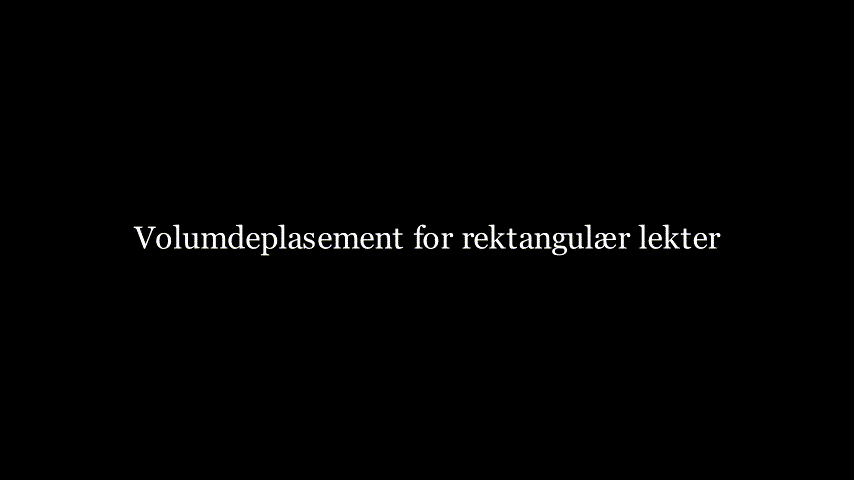
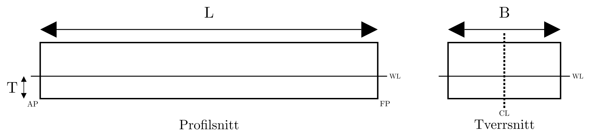
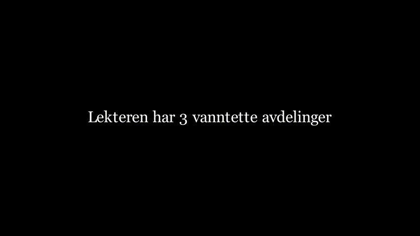
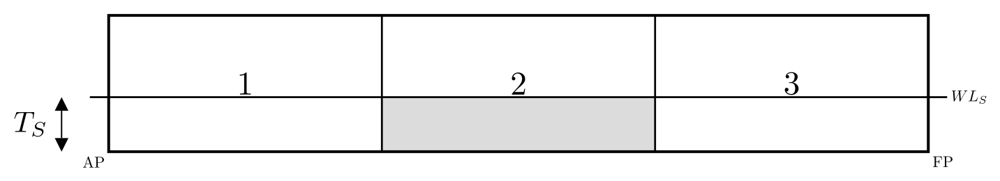
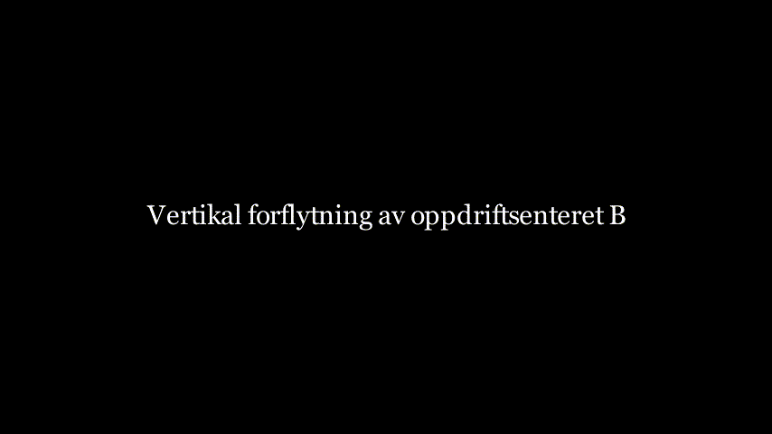
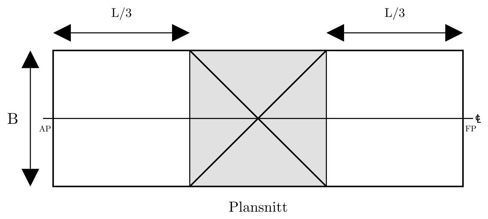
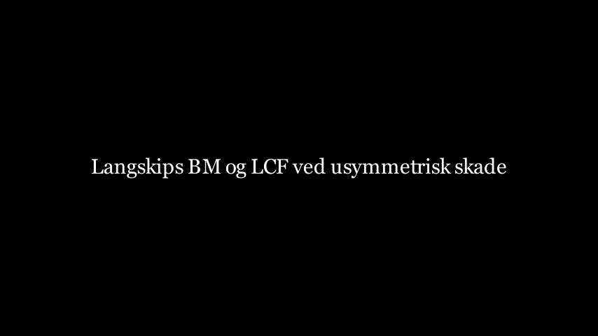
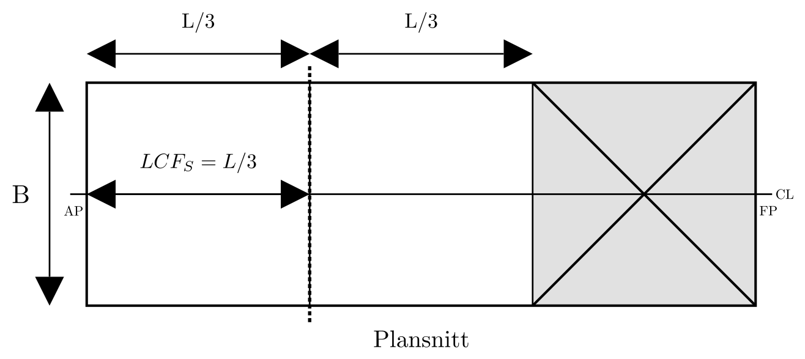
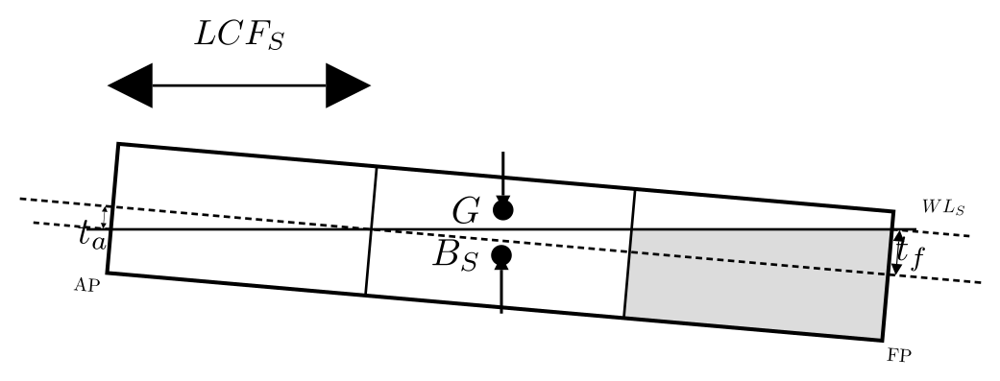

By the end of this module, students should be able to:
KB, BM,
GM) after damage.T_A and T_F.GM_S > 0 m and
T_S < D.| Symbol | Meaning | Unit |
|---|---|---|
| \(L\) | Length | m |
| \(B\) | Breadth | m |
| \(D\) | Depth | m |
| \(T\) | Intact draft | m |
| \(T_S\) | Damaged symmetric draft | m |
| \(\nabla\) | Intact displacement volume | m³ |
| \(\nabla_S\) | Damaged displacement volume | m³ |
| \(I_{WL}\) | Transverse waterplane second moment (intact) | m⁴ |
| \(I_{WL_S}\) | Transverse waterplane second moment (damaged waterplane) | m⁴ |
| \(I_F\) | Longitudinal flotation-plane second moment (intact) | m⁴ |
| \(I_{F_S}\) | Longitudinal flotation-plane second moment (damaged waterplane) | m⁴ |
| \(KB\) | Keel to buoyancy center | m |
| \(BM\) | Metacentric radius | m |
| \(GM\) | Metacentric height | m |
| \(LCB\) | Longitudinal center of buoyancy | m |
| \(LCF\) | Longitudinal center of flotation | m |
| \(t_a\) | Aft trim component | m |
| \(t_f\) | Forward trim component | m |
| \(T_A\) | Final aft draft | m |
| \(T_F\) | Final forward draft | m |
Animation: Build-up of barge principal dimensions.
Inputs:

Animation: Intact hydrostatics — displacement volume and metacentric radii.
Equations:

Figure: Intact waterline and geometric inputs used for initial displacement volume. \[ \nabla = L \times B \times T \]
\[ \Delta = \rho \times \nabla \]
\[ BM_T = \frac{I_{WL}}{\nabla},\qquad BM_L = \frac{I_F}{\nabla} \]
Procedure:
Mini-check:

Animation: Barge compartment layout and designation of the damaged compartment.
Inputs:
Equations:
\[ L_S = L-l_d \]
\[ L \times B \times T = L_S \times B \times T_S \]
Procedure:
Mini-check:
Animation: Parallel sinkage to the symmetric damage draft \(T_S\).
This phase establishes the new symmetric damage draft before trim effects are added.
Required inputs:
For a rectangular barge with one fully flooded longitudinal compartment, the effective buoyant length becomes \((L-l_d)\). Conservation of displacement volume gives:
\[ L \times B \times T = (L-l_d) \times B \times T_S \]

Figure: Symmetric damage sinkage with reduced effective buoyant length.
Solve directly for damaged symmetric draft:
\[ T_S = \frac{L}{L-l_d}T \]
Then enforce displacement conservation in the damaged equilibrium state:
\[ \nabla_S = \nabla \]
Use this sequence every time:
Why this order matters:
Mini-example: barge with 3 equal compartments (center compartment damaged)
\[ T_S = \frac{L}{L-l_d}T = \frac{60}{60-20}\cdot 3.00 = 4.50\ \mathrm{m} \]
\[ \nabla_S = \nabla = L \times B \times T = 60\cdot 12\cdot 3.00 = 2160\ \mathrm{m^3} \]
Checks:
KB, BM,
GM)
Animation: Vertical shift of the centre of buoyancy — \(KB_S\) after damage.
Animation: Reduction of transverse metacentric radius \(BM_{T_S}\) due to lost waterplane area.
Inputs:
Equations:

Figure: Reduction in transverse metacentric radius after damage.
\[ BM_{T_S} = \frac{I_{WL_S}}{\nabla},\qquad BM_{L_S} = \frac{I_{F_S}}{\nabla} \]
\[ GM_S = KB_S + \frac{I_{WL_S}}{\nabla} - KG \]
Procedure:
Mini-check:

Animation: Longitudinal geometry after unsymmetric damage — \(LCB_S\), \(LCF_S\), and \(BM_{L_S}\).
Inputs:
Equations:

Figure: Unsymmetric damage geometry showing longitudinal BM context and damaged-state LCF.
\[ BM_{L_S} = \frac{I_{F_S}}{\nabla} \]
\[ M_{trim} = \Delta \times (LCG-LCB_S) \]
\[ MCT_{1cm_S} = \frac{\Delta \times BM_{L_S}}{100 \times L} \]
Procedure:
Mini-check:

Animation: Trim moment calculation and distribution into trim components \(t_a\) (aft) and \(t_f\) (forward).
This phase converts the trimming moment into forward and aft drafts.
Required inputs:
Step-by-step procedure:

Figure: Trim setup and sign convention for aft and forward draft changes.
\[ l_k= LCG-LCB_S \]
\[ M_{T}=\Delta \times l_k \]
\[ MCT_{1cm_S}=\frac{\Delta \times BM_{L_S}}{100 \times L} \]
\[ t_{cm} = \frac{M_{T}}{MCT_{1cm_S}} \]
Convert to meters: \(t_m=t_{cm}/100\).
Distribute \(t_m\) around \(LCF_S\) into trim components \(t_a\) (aft) and \(t_f\) (forward) using AP/FP weighting factors.
General AP-based distribution factors:
\[ aft =\frac{LCF_S}{L}, \qquad fore =\frac{L-LCF_S}{L} \]

Figure: Distribution of total trim between aft and forward drafts about \(LCF_S\).
Then compute trim components \(t_a\) and \(t_f\):
\[ t_a = t_m\left(\frac{LCF_S}{L}\right), \qquad t_f = t_m\left(\frac{L-LCF_S}{L}\right) \]
Special case (if \(LCF_S=L/2\), i.e., midship):
\[ t_a = \frac{t_m}{2},\qquad t_f = \frac{t_m}{2} \]
Mini example:

Animation: Combined damaged equilibrium state — final drafts \(T_A\), \(T_F\) and residual \(GM_S\).
Inputs:
Equations:
\[ GM_S > 0\ \mathrm{m} \]
\[ T_{crit}=\max(T_A,T_F) < D \]
Procedure:
Mini-check:
Step 1: Initial displacement and setup
\[ \nabla = L \times B \times T = 60 \cdot 12 \cdot 3.00 = 2160\ \mathrm{m^3} \]
With \(\rho = 1.0\ \mathrm{t/m^3}\), initial displacement is \(\Delta = 2160\ \mathrm{t}\).
Step 2: Parallel submergence solved from compartment length
For a rectangular barge with one fully damaged longitudinal compartment, the damaged buoyant length is \((L-l_d)\). Equilibrium gives:
\[ L \times B \times T = (L-l_d) \times B \times T_S \]
\[ T_S = \frac{L}{L-l_d}T = \frac{60}{60-3.5}\cdot 3.00 = 3.1858\ \mathrm{m} \]
Apply displacement conservation for this lost-buoyancy setup:
\[ \nabla_S = \nabla = 2160\ \mathrm{m^3} \]
So displacement remains:
\[ \Delta_S = \Delta = 2160\ \mathrm{t} \]
Step 3: Updated hydrostatics (\(BM_{T_S}\), \(BM_{L_S}\), \(GM_S\))
\[ BM_{T_S} = \frac{I_{WL_S}}{\nabla} = \frac{7600}{2160} = 3.519\ \mathrm{m} \]
\[ BM_{L_S} = \frac{I_{F_S}}{\nabla} = \frac{2.10 \times 10^6}{2160} = 972.2\ \mathrm{m} \]
\[ GM_S = KB_S + BM_{T_S} - KG = 1.62 + 3.519 - 4.20 = 0.939\ \mathrm{m} \]
Step 4: Trim and final drafts
Using AP-based coordinates, take \(LCG = 30.00\ \mathrm{m}\) and \(LCB_S = 29.75\ \mathrm{m}\):
\[ M_{trim} = \Delta \times (LCG - LCB_S) = 2160\,(30.00 - 29.75) = 540.0\ \mathrm{t\,m} \]
Use a box-barge approximation for moment-to-change-trim 1 cm:
\[ MCT_{1cm_S} = \frac{\Delta \times BM_{L_S}}{100 \times L} = \frac{2160 \cdot 972.2}{100 \cdot 60} = 350.0\ \mathrm{t\,m/cm} \]
\[ trim = \frac{M_{trim}}{MCT_{1cm_S}} = \frac{540.0}{350.0} = 1.543\ \mathrm{cm} = 0.01543\ \mathrm{m} \]
Assume trim about \(LCF_S = 30.00\ \mathrm{m}\) from AP (midship in this case), so trim components \(t_a\) and \(t_f\) are each half the total trim:
\[ t_a = \frac{trim_m}{2} = 0.00771\ \mathrm{m},\qquad t_f = \frac{trim_m}{2} = 0.00771\ \mathrm{m} \]
Final drafts:
\[ T_F = T_S + t_f = 3.1858 + 0.00771 = 3.1935\ \mathrm{m} \]
\[ T_A = T_S - t_a = 3.1858 - 0.00771 = 3.1781\ \mathrm{m} \]
Step 5: Acceptance checks
\[ GM_S = 0.939\ \mathrm{m} > 0\ \mathrm{m}\ \checkmark \]
\[ T_{S,\max} \approx T_F = 3.1935\ \mathrm{m} < D = 6.0\ \mathrm{m}\ \checkmark \]
| Quantity | Value | Unit |
|---|---|---|
| Initial displacement volume \(\nabla\) | 2160 | m^3 |
| Damaged compartment length \(l_d\) | 3.5 | m |
| Solved symmetric draft \(T_S\) | 3.1858 | m |
| Damaged displacement volume \(\nabla_S\) | 2160 | m^3 |
| \(BM_{T_S}\) | 3.519 | m |
| \(GM_S\) | 0.939 | m |
| Total trim | 0.0154 | m |
| Final aft draft \(T_A\) | 3.1781 | m |
| Final forward draft \(T_F\) | 3.1935 | m |
| Acceptance status | PASS | - |
Note: - This worked example is intentionally simple and uses box-barge approximations for teaching flow. - In production calculations, replace simplified terms with your hydrostatic model outputs for each intermediate draft.
Given:

Figure: Five equal longitudinal watertight compartments, with one damaged compartment in the worked example.
Step 1: Initial displacement
\[ \nabla = L \times B \times T = 100 \cdot 20 \cdot 3.50 = 7000\ \mathrm{m^3} \]
\[ \Delta = \rho \times \nabla = 1.025\times 7000 = 7175\ \mathrm{t} \]
Step 2: Symmetric damaged draft from lost buoyant length
Damaged compartment length:
\[ l_d = 20.0\ \mathrm{m},\qquad L_S=L-l_d=80.0\ \mathrm{m} \]
Solve equilibrium:
\[ L \times B \times T = (L-l_d) \times B \times T_S \]
\[ T_S = \frac{L}{L-l_d}T = \frac{100}{80}\cdot 3.50 = 4.375\ \mathrm{m} \]
Displacement conservation:
\[ \nabla_S = \nabla = 7000\ \mathrm{m^3},\qquad \Delta_S = \Delta = 7175\ \mathrm{t} \]
Step 3: Damaged hydrostatic inputs from compartment geometry
Surviving buoyant/waterplane regions are intervals \([0,60]\) and \([80,100]\) m from AP.
Longitudinal centroids:
\[ LCB_S = LCF_S = \frac{60\cdot 30 + 20\cdot 90}{60+20} = 45.0\ \mathrm{m} \]
Damaged transverse waterplane second moment:
\[ I_{WL_S}=\frac{1}{12}(80)B^3 = \frac{1}{12}(80)(20^3)=53{,}333.3\ \mathrm{m^4} \]
Damaged longitudinal flotation second moment about \(LCF_S\):
\[ I_{F_S}=\left[\frac{B\,60^3}{12}+A_1(30-45)^2\right]+\left[\frac{B\,20^3}{12}+A_2(90-45)^2\right] \]
with \(A_1=60\cdot 20=1200\ \mathrm{m^2}\) and \(A_2=20\cdot 20=400\ \mathrm{m^2}\), giving
\[ I_{F_S}=1{,}453{,}333.3\ \mathrm{m^4} \]
Use \(KB_S \approx T_S/2 = 2.1875\ \mathrm{m}\).
Step 4: Updated stability quantities
\[ BM_{T_S}=\frac{I_{WL_S}}{\nabla}=\frac{53{,}333.3}{7000}=7.619\ \mathrm{m} \]
\[ BM_{L_S}=\frac{I_{F_S}}{\nabla}=\frac{1{,}453{,}333.3}{7000}=207.619\ \mathrm{m} \]
\[ GM_S=KB_S+BM_{T_S}-KG=2.1875+7.619-4.20=5.607\ \mathrm{m} \]
Step 5: Trim and final drafts
\[ M_{trim}=\Delta \times (LCG-LCB_S)=7175\times(50.0-45.0)=35{,}875\ \mathrm{t\,m} \]
\[ MCT_{1cm_S}=\frac{\Delta \times BM_{L_S}}{100\times L}=\frac{7175\times 207.619}{100\times 100}=148.967\ \mathrm{t\,m/cm} \]
\[ trim_{cm}=\frac{M_{trim}}{MCT_{1cm_S}}=240.83\ \mathrm{cm},\qquad trim_m=2.4083\ \mathrm{m} \]
Compute trim components \(t_a\) and \(t_f\) using AP-based distribution factors (\(LCF_S=45.0\ \mathrm{m}\)):
\[ ext{aft share}=\frac{LCF_S}{L}=0.45,\qquad \text{forward share}=\frac{L-LCF_S}{L}=0.55 \]
\[ t_a=trim_m\left(\frac{LCF_S}{L}\right)=2.4083\times 0.45=1.084\ \mathrm{m} \]
\[ t_f=trim_m\left(\frac{L-LCF_S}{L}\right)=2.4083\times 0.55=1.3246\ \mathrm{m} \]
Final drafts:
\[ T_A=T_S-t_a=4.375-1.084=3.291\ \mathrm{m} \]
\[ T_F=T_S+t_f=4.375+1.3246=5.700\ \mathrm{m} \]
Step 6: Acceptance checks
\[ GM_S=5.607\ \mathrm{m}>0\ \mathrm{m}\ \checkmark \]
\[ T_{crit}=\max(T_A,T_F)=5.700\ \mathrm{m}<D=12.0\ \mathrm{m}\ \checkmark \]
| Quantity | Value | Unit |
|---|---|---|
| Initial displacement volume \(\nabla\) | 7000 | m^3 |
| Damaged compartment length \(l_d\) | 20.0 | m |
| Solved symmetric draft \(T_S\) | 4.375 | m |
| \(LCB_S=LCF_S\) | 45.0 | m from AP |
| \(I_{WL_S}\) | 53,333.3 | m^4 |
| \(I_{F_S}\) | 1,453,333.3 | m^4 |
| \(BM_{T_S}\) | 7.619 | m |
| \(GM_S\) | 5.607 | m |
| Total trim | 2.408 | m |
| Final aft draft \(T_A\) | 3.291 | m |
| Final forward draft \(T_F\) | 5.700 | m |
| Acceptance status | PASS | - |
Quick sanity checks:
\[ T_S = \frac{L}{L-l_d}T \]
\[ \nabla_S=\nabla,\quad \Delta_S=\Delta \]
\[ BM_{T_S}=\frac{I_{WL_S}}{\nabla},\quad BM_{L_S}=\frac{I_{F_S}}{\nabla},\quad GM_S=KB_S+BM_{T_S}-KG \]
\[ M_{trim}=\Delta \times (LCG-LCB_S),\quad MCT_{1cm_S}=\frac{\Delta \times BM_{L_S}}{100 \times L},\quad trim_{cm}=\frac{M_{trim}}{MCT_{1cm_S}} \]
Suggested references:
Figure placeholders (existing exports):